假设我是架构师，我需要将项目的基础框架导入到版本库中
假设已经建好了基础框架maven项目文件夹“erp”，如下图所示：
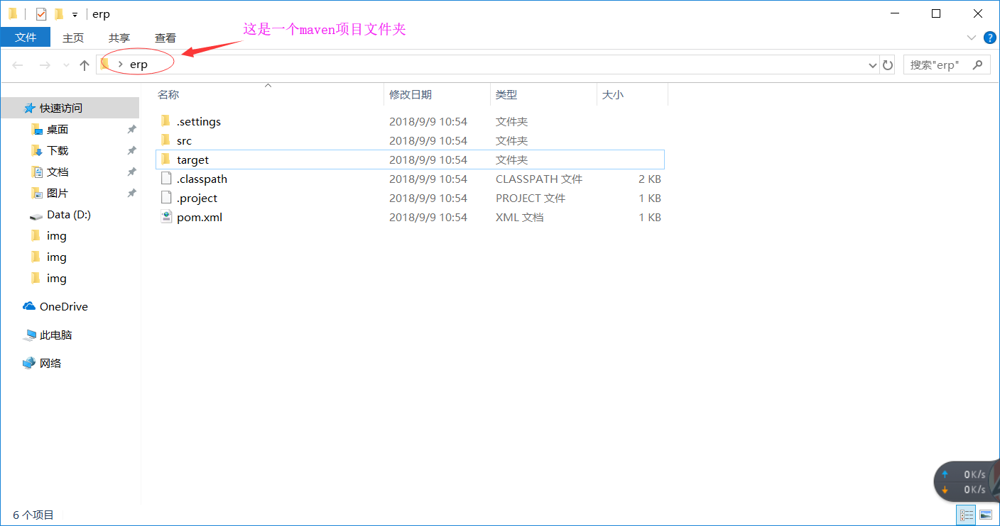
首先打开版本库浏览界面
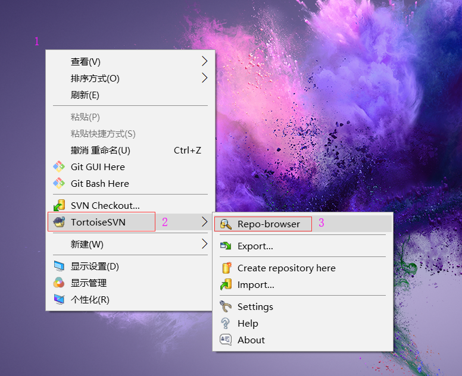
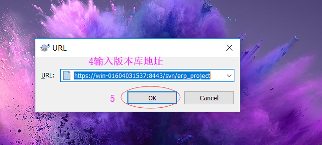
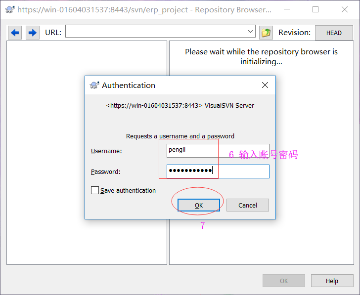
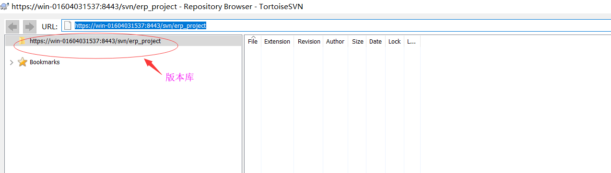
然后将maven项目文件夹“erp”导入到版本库中
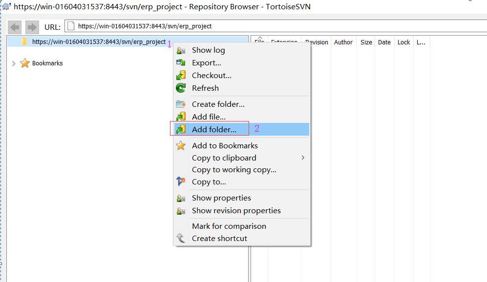
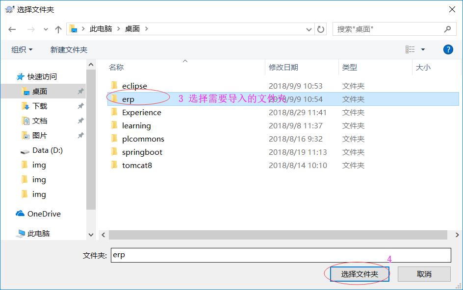
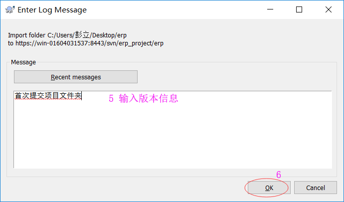
可以看到maven项目文件夹“erp”已经成功导入到版本库中了
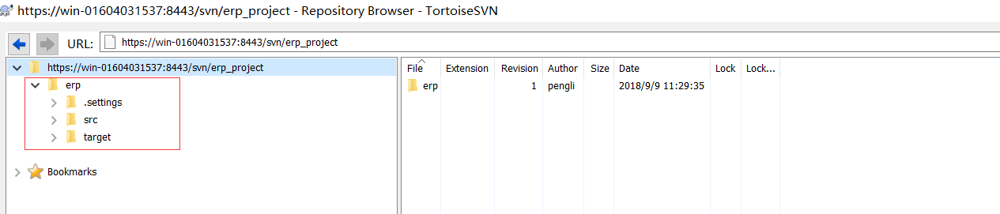
假设我是开发，我需要将版本库的东西拉到本地
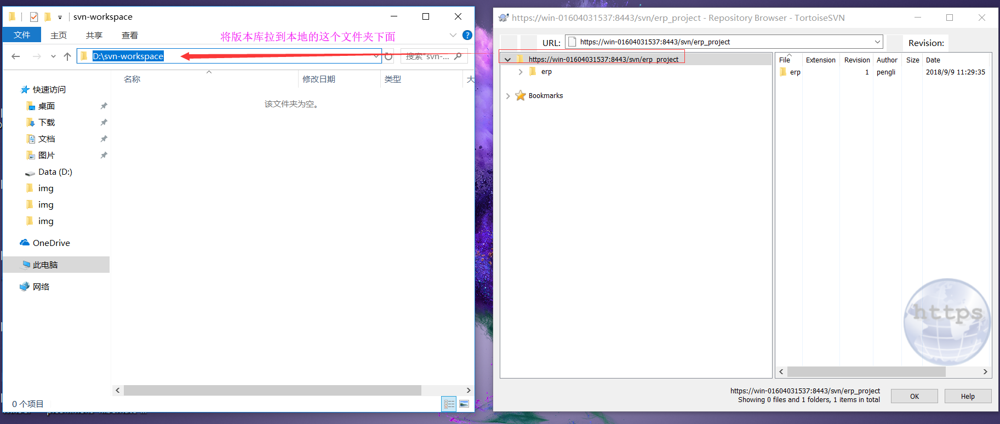
在本地文件夹中的空白处点鼠标右键（注意：想拉到哪个文件夹下就在哪个文件夹点右键）checkout
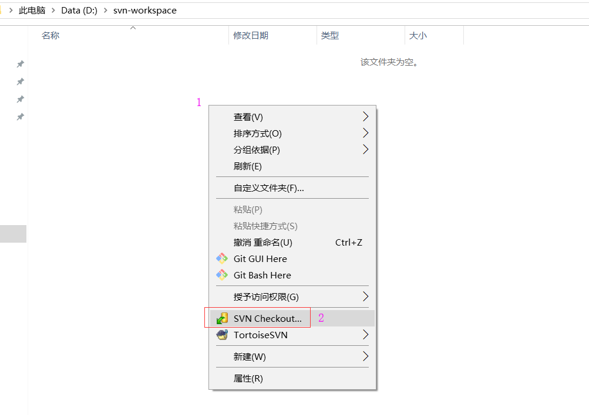
 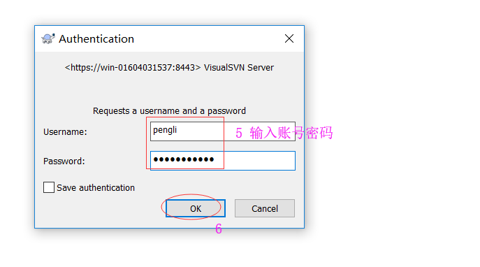
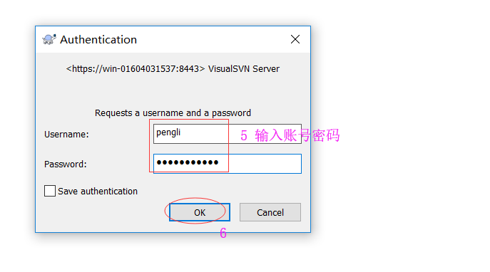
可以看到文件夹图标上有个绿色的勾，并且文件夹下有一个隐藏的.svn文件夹，说明已经拉取成功，并且该文件夹与版本库关联了起来
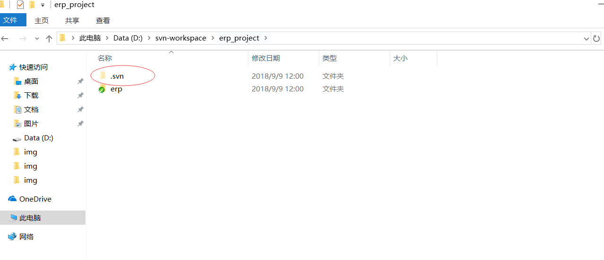